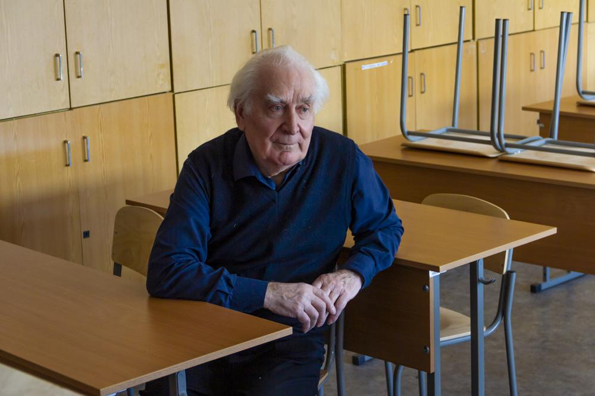
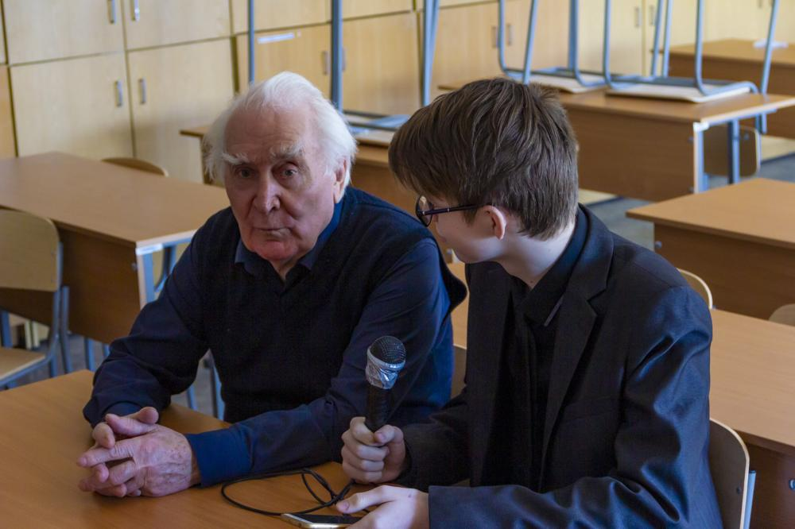
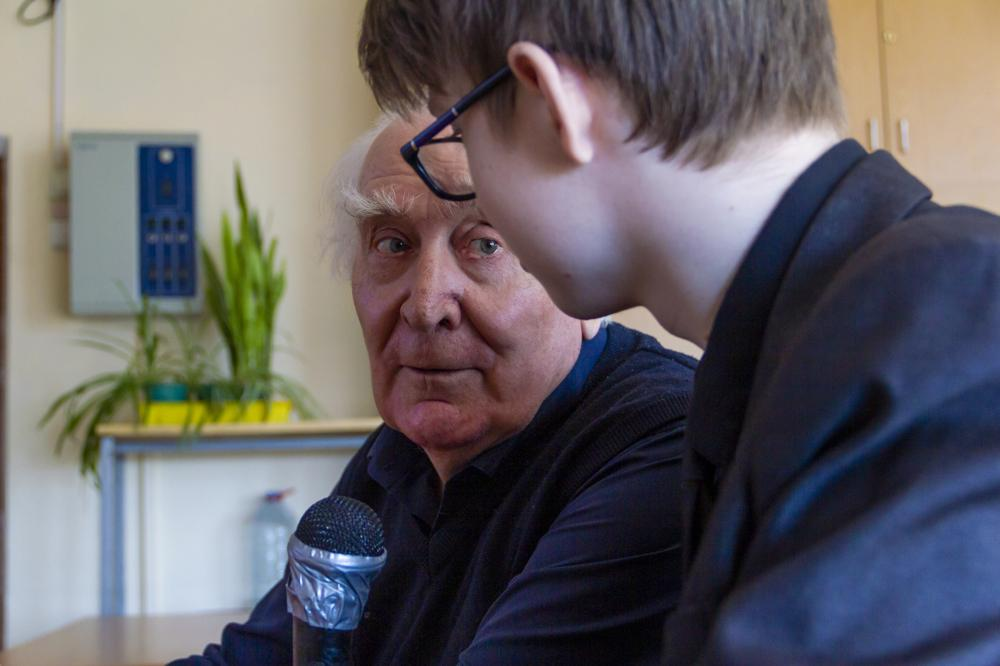
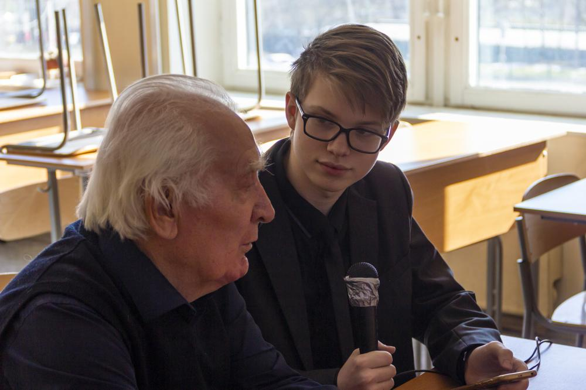
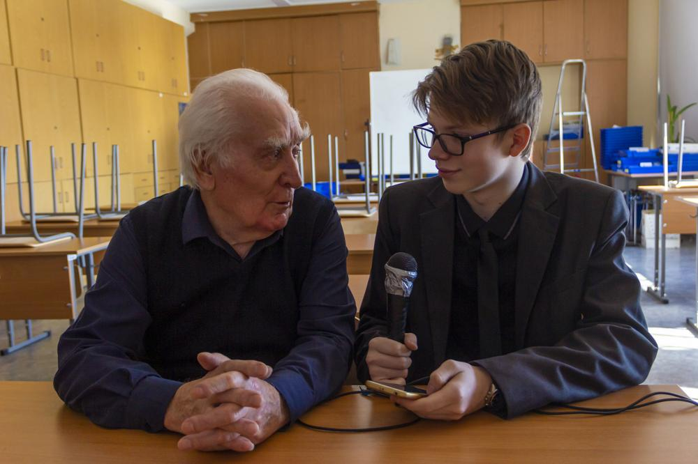
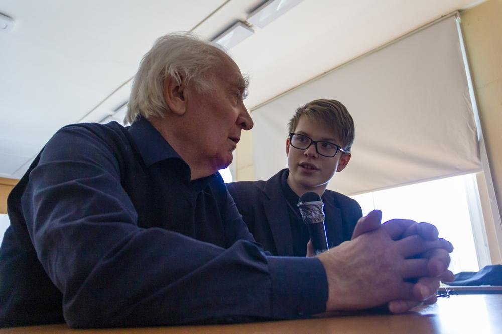
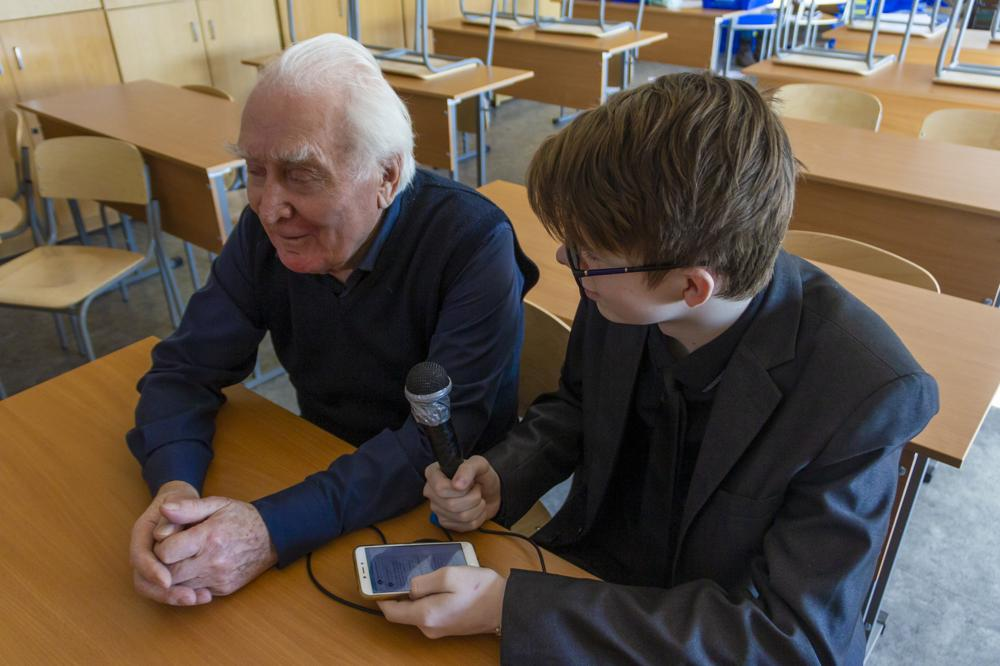
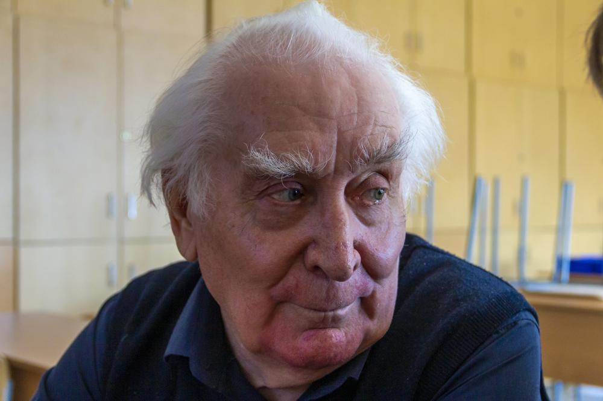
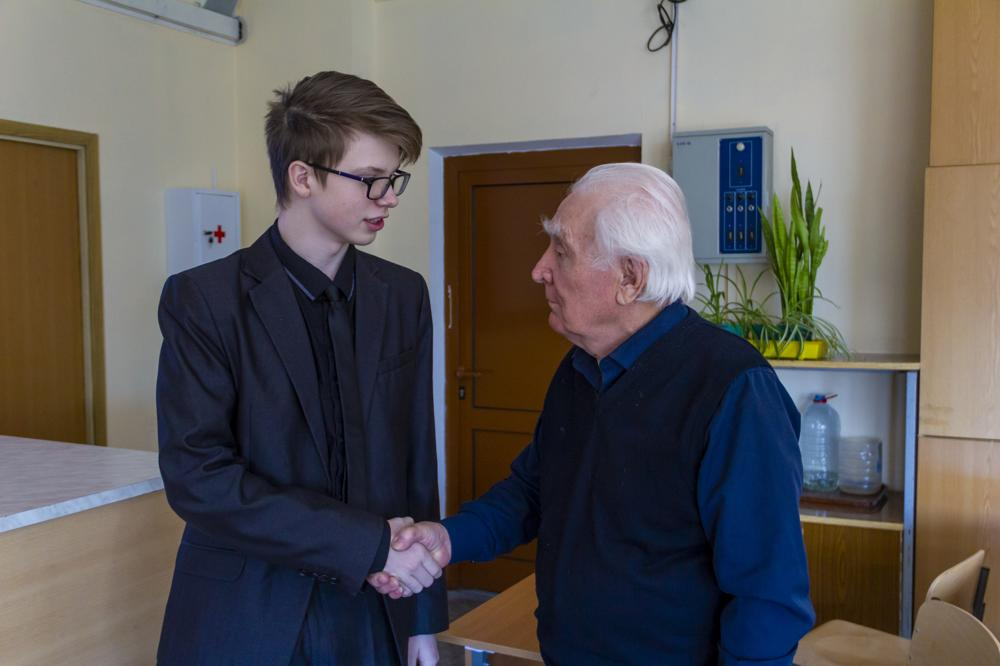

18 марта учителю физики Николаю Алексеевичу Ретивову исполнилось 80 лет. Мы — Гурилий Васьянов и Хико — решили его поздравить с юбилеем и, воспользовавшись поводом, побеседовать.
— О, Николай Алексеевич, и я пришел сфотографироваться! — раздался голос Ивана Викторовича Внукова. — А вы как попали сюда?
— А мы интервью хотим взять у Николая Алексеича, — ответил Гурилий.
— Деловые! Я только это в планах имел в виду! Николай Алексеевич, какие шустрые пошли, а? Я только думал: как бы мне с вами договориться, если вы согласитесь... А эта молодежь уже тут!
— Ну, они, вот, прибежали, — сказал Николай Алексеевич.
— И вы им не отказали?
— А я и не знал...
Ну ладно, это так, вступление. Сейчас начнется самое главное. И да, скатывая с аудиозаписи, я старался как можно меньше исправлять речь говорящих, чтобы передать не только их идеи и мысли, но и психологию.
Начнем с такого, простого вопроса. Почему вы стали именно учителем физики?
Вопрос такой, о котором я никогда не думал. Почему...
То есть, вам это нравится?
Это моя жизнь практически. Я вот уже сколько... шестьдесят лет... шестьдесят два года учитель физики. С пятьдесят восьмого года.
У вас есть какие-нибудь научные работы?
Есть. Более пятидесяти.
А какая-нибудь самая выдающаяся, на ваш взгляд?
Ну, наверное, то, что было первое, что было мной запатентовано, как авторское свидетельство. По полупроводникам. Полупроводники с фотопамятью. Это на селене, активированном висмутом или ртутью при низких температурах, при температуре жидкого азота. Это авторское свидетельство.
Вам нравится учить лицеистов? Как вы думаете, они, вообще, способные ребята?
Ну, вопрос такой, расплывчатый. Всегда, в любой аудитории есть способные, даже умнее учителя. Я говорю, что только таким можно ставить хорошие оценки.
Ну, вообще, это признак хорошего учителя, если есть ученики, которые его умнее.
Я не психолог, поэтому про слова умнее
или тупее
я не могу говорить. Я только могу говорить, желает работать или не желает. К сожалению, в аудитории всегда находятся несколько человек, которые просто безразличны к учебе.
Скажите, лицеисты в целом, они как, готовы учиться? Хотят учиться?
Большинство, наверное, хотя бы процентов на девяносто. Но, к сожалению, находится один из десяти, который не желает.
То есть, в любой бочке меда найдется ложка дегтя.
Ну да, но у нас все-таки, как называется, отборные, элитные ученики. Может быть поэтому один из десяти или два, не больше.
А где вы работали до лицея?
Я немного поменял работ. Начинал я работать в политехническом институте в Казахстане. Потом пищевой институт, двадцать пять лет. Потом радиотехнический институт. Во всех институтах преподавателем. Ну и потом лицей.
Скажите, пожалуйста, как педагог с большим стажем, что лучше всего должен уметь делать учитель?
Заинтересовать учеников своим предметом. Что этот предмет очень интересный.
Как вы относитесь к ЕГЭ по физике? Объективно ли он оценивает знания учеников?
Ни в коем случае. Не объективно. Потому что отвечать да
или нет
это очень плохо. Ученик должен не просто по готовой формуле посчитать, а, самое главное, уметь объяснить, почему так. Но, к сожалению, экзамен в форме ЕГЭ этого не требует, и большинство учителей сейчас настроены лишь бы натаскать на да
или нет
, это очень плохо.
Как вы думаете, в советских школах было лучше образование, чем сейчас, или наоборот?
Это невозможно сравнивать, потому что изменились технологии обучения. Сейчас больше возможностей, как в технологиях для учителя, так и для учеников. Ученикам не надо бежать в библиотеку или куда-нибудь, информацию он получить может из гаджета, поэтому сравнивать, когда лучше, в принципе невозможно.
Расскажите, были ли у вас какие-то детские мечты, которые вы очень хотели осуществить?
Как всегда, наверное, были. Как в песне той: А мне летать охота!
Ну и я хотел летать.
Космонавтом хотели быть? Или летчиком?
Ну, может быть. Хотя бы летчиком. Но меня списали по состоянию здоровья. По зрению. У меня поврежден глаз был.
Если бы у вас была возможность написать книгу, о чем бы она была?
К сожалению, я не писатель, поэтому писать художественную книгу я не могу. О чем бы она была? Ну, что-нибудь в виде фантастики. О физических проблемах.
То есть вы, как человек, который знает, разбирается, могли бы в художественной форме преподнести населению...
Популяризировать... Ну нет, я не Перельман.
И последний вопрос. Если бы вам дали, скажем, миллион долларов, что бы вы с ним сделали?
(Паузы были и до этого, но в этот раз особенно длинная.)
Ну вот первое, что приходит на ум?
Ничего не приходит... Во-первых, я не знаю, что это такое... А во-вторых... (Еще пауза.) Открыл бы исследовательскую лабораторию.
Ну, на этом наше интервью подходит к концу. Большое спасибо за уделенное время!
А для особо любопытных мы сняли видос. Конечно, он получился максимально бюджетным в силу некоторых обстоятельств, но все же для начала довольно неплохим. Наслаждаемся!
Автор текста, фото, музыки в видео (ну, кроме вступления) и монтаж видео: Масахико АМАНО a.k.a. H1K0.
Интервью, съемка видео: Гурилий Васьянов.